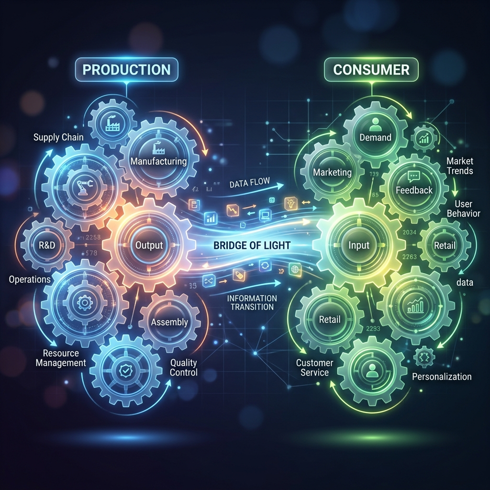
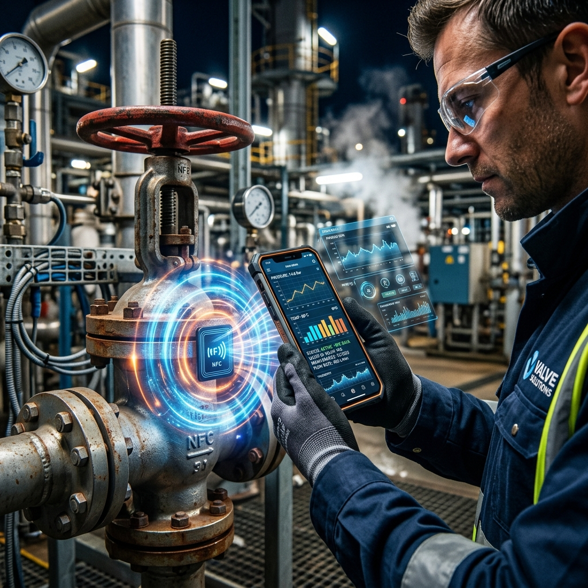
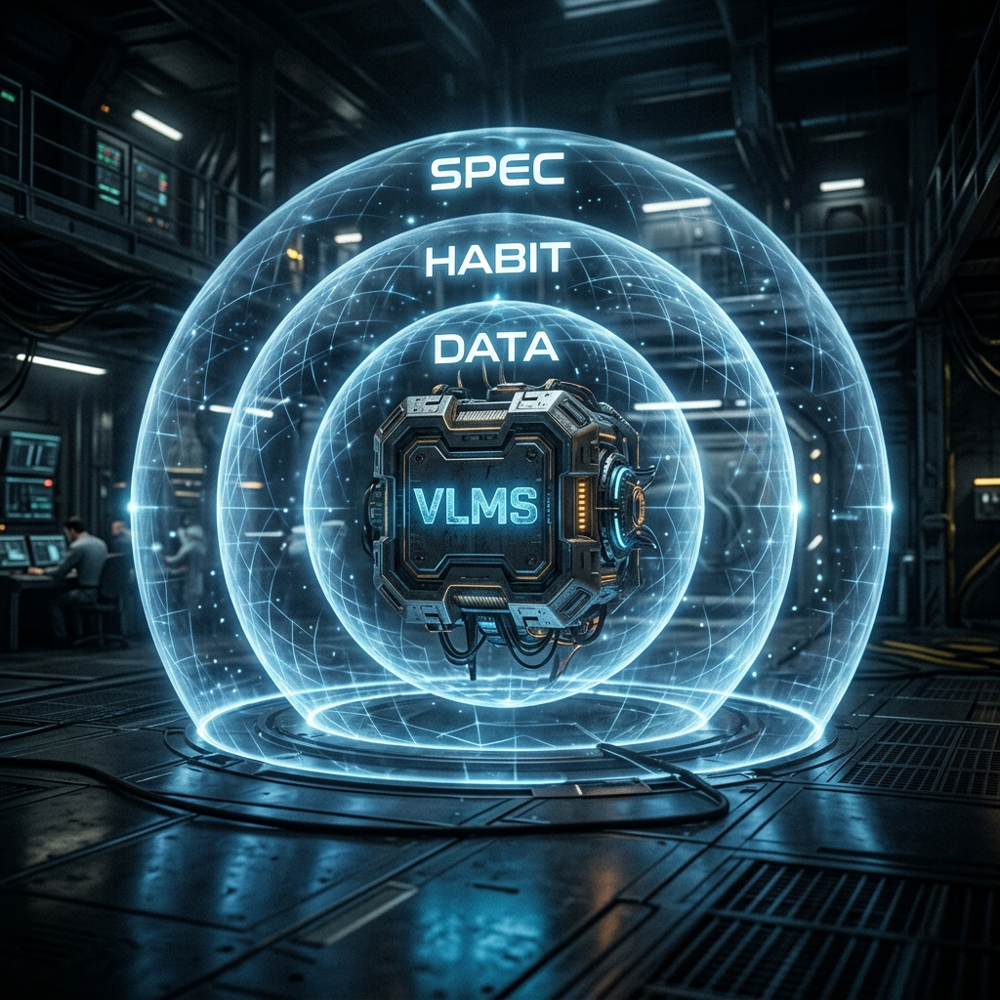

Strategic Roadmap
VLMS 戰略藍圖
數據驅動的生態系轉型
FCI Digital Transformation 2026
01 / Vision
雙重終極目標
進入決策循環：
讓 VLMS 成為客戶每天採購、排程時不可或缺的決策輔助系統。
強化生產 Synergy：
透過數據串聯「維修、備品、銷售」。
自動化轉型：
將人工轉單進化為數據驅動的自動化循環。

02 / Big Picture
數位生態系整合
生產生態系：
銷售與維修的硬核閉環。
消費生態系：
平台互動與數據透明化的軟體價值。
核心橋樑：
VLMS 創造數據綜效 (Synergy)，連結兩大齒輪。
03 / Implementation
DIISA 數據引擎
Data Input：
Ureason 初篩 + Votes Infinity 深診 + 數位履歷。
Insight：
AI 發現趨勢，精準預判設備風險。
Strategy & Action：
自動建議維修排程，達成真正的預測維護。

04 / Interface
虛實對接入口
RFID + NFC：
手機感應，現場直通 Ragic 透明數據。
互動回饋：
即時回報問題，縮短反應鏈條。
建立依賴：
讓客戶在現場即刻感受平台的強力支援。

05 / Competitive Advantage
戰略護城河
資料牆：
自動化導入歷史維修紀錄，建立絕對門檻。
習慣牆：
深度嵌入客戶決策流程，轉換成本極高。
規格牆：
讓數位標準成為招標規範的代名詞。
←
→